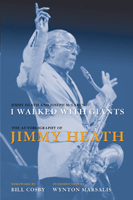

<body bgcolor="#FFFFFF" text="#000000" link="#0000FF" vlink="#CC0000" alink="#CC0000"><center><hr width="350" size="1" align="center" noshade>A life in music portrayed by an NEA Jazz Master and his legendary friends<hr width="350" size="1" align="center" noshade><p><a href="https://cdcshoppingcart.uchicago.edu/Cart/ChicagoBook.aspx?ISBN=9781439901984&&PRESS=temple" target="_top">Buy this book!</a> | <a href="https://cdcshoppingcart.uchicago.edu/Cart/Cart.aspx?PRESS=temple" target="_top">View Cart</a> | <a href="https://cdcshoppingcart.uchicago.edu/Cart/Cart.aspx?PRESS=temple" target="_top">Check Out</a></p><p></p></center><!--none//--><h1>I Walked with Giants</h1>
<H2>The Autobiography of Jimmy Heath</H2>
<h3>Jimmy Heath and Joseph McLaren, foreword by Bill Cosby, introduction by Wynton Marsalis</h3>
<P>cloth 1-4399-0198-8 $39.50, Jan 10, <FONT COLOR=#990033>Available</FONT>
<BR> 344 pp
6x9
35&nbsp;halftones
</P><h3 align="center"><P><font color="#996633">Best Book of the Year from the Jazz Journalists Association,
2011</font></P>
</H3>
<BLOCKQUOTE><I>"I have long admired Jimmy's passion heard so clearly in his music; he is a soulful musician and a consummate educator. In these pages he gives a new voice to his love of life and music. He once told Dr. Camille Cosby that �our history is a mystery,� so here he pulls back the veil and sets forth a wonderful collection of reminiscences culled from a long life of accumulated wisdom." <BR><B>&#151Nancy Wilson</B>, song stylist</I></BLOCKQUOTE>
<p>Composer of more than 100 jazz pieces, three-time Grammy nominee, and performer on more than 125 albums, saxophonist Jimmy Heath has earned a place of honor in the history of jazz. Over his long career, Heath knew many jazz giants, such as Charlie Parker, and played with other innovators, including John Coltrane, Miles Davis, and especially Dizzy Gillespie. Along the way, Heath won both their respect and their friendship.
</p><p>
In this extraordinary autobiography, the legendary Heath creates a �dialogue� with musicians and family members. As in jazz, where improvisation by one performer prompts another to riff on the same theme, <i>I Walked with Giants</i> juxtaposes Heath�s account of his life and career with recollections from jazz giants about life on the road and making music on the world�s stages. His memories of playing with his equally legendary brothers, Percy and Albert (aka �Tootie�), dovetail with their recollections.
</p><p>
Heath reminisces about a South Philadelphia home filled with music and a close-knit family that hosted musicians performing in the city�s then thriving jazz scene. Milt Jackson recalls, �I went to their house for dinner. . . . Jimmy�s father put Charlie Parker records on and told everybody that we had to be quiet till dinner because he had Bird on. . . . When I [went] to Philly, I�d always go to their house.�
</p><p>
Today Heath performs, composes, and works as a music educator and arranger. By turns funny, poignant, and extremely candid, Heath�s story captures the rhythms of a life in jazz.</p>
<BR>&nbsp;<h2>Excerpt</h2><P>Excerpt available at <a href="http://www.temple.edu/tempress">www.temple.edu/tempress</a></p>
<BR>&nbsp;<h2>Reviews</h2>
<P><i>"A masterpiece that will stand out as a classic for years to come."</I> <BR><B> &#151Douglas Henry Daniels</B>, University of California, Santa Barbara, and author of <i>Lester Leaps In: The Life and Times of Lester �Pres� Young</i>
<P><i>"Jimmy Heath is the hippest, coolest, deepest, wittiest, most in-the-pocket and on-the-money, bebop-brained, backward-absorbing, forward-looking, constantly sharing saxophonist, flutist, educator, composer, arranger, bandleader, sideman, jam-man, and now memoirist any of us will ever know. It is typical of Jimmy to call his autobiography </i>I Walked with Giants<i>, but make no mistake: He, too, is a giant, and all the other giants know it. This book is a treasure for jazz lovers, by a man who has been at the center of jazz for sixty years, ever since he was a Little Bird."</I> <BR><B> &#151Gary Giddins</B>, author of <i>Jazz</i> (with Scott DeVeaux), <i>Bing Crosby: A Pocketful of Dreams</i>, and <i>Visions of Jazz</i>
<P><i>"Jimmy Heath is an artistic genius and spiritual giant whose work and life represent the last of the golden age of jazz. His teaching links him to the younger generation, and his new music keeps him grounded in our time as a grand master."</I> <BR><B> &#151Cornel West</B>, Princeton University
<P><i>"Heath, with McLaren, tells a life story that is inspiring and thoroughly enjoyable. Rising up through the big band era, absorbing the ideas of the beboppers in the mid-1940s, and continuing to embrace changes in jazz from the 1960s through the 1990s, Heath has produced sought-after compositions and arrangements and, as a teacher, has shared his love of the principles of jazz with thousands of students. Now an elder statesman who remains active, he writes of how his supportive family life allowed him to succeed. His parents let him and many other musicians practice at their home, and they were steadfast even after he developed a taste for heroin in the 1950s. Beyond Heath�s storytelling, the book is interwoven with comments from a number of acquaintances (mostly musicians), which helps keep the narrative moving. Verdict This is an entirely engaging and thoughtful autobiography from one of jazz�s true treasures. This richly told saga is highly recommended."</I> <BR><B>&#151William G. Kenz</B>, Minnesota State Univ., Moorhead
<p><i>"Heath, with McLaren tells a life story that is inspiring and thoroughly enjoyable.... Beyond Heath�s storytelling, the book is interwoven with comments from a number of acquaintances (mostly musicians), which helps keep the narrative moving. Verdict: This is an entirely engaging and thoughtful autobiography from one of jazz�s true treasures. This richly told saga is highly recommended."</i>
<br>&#151;<b><i>Library Journal</i></b>
<p><i>"Heath puts all of the peaks and valleys of a rigorous professional life in a unique memoir that speaks volumes to the values of discipline, tradition, and perseverance. Heath's story is told in a classic call-and-response manner. . . . A true jazz milestone, this bold account . . . further illuminates the seldom-told story of our creative homegrown music."</i>
<br>&#151;<b><i>Publishers Weekly</i></b>
<p><i>"Heath shares his transformation from a kid absorbing the big band and bebop sounds of his childhood into the elder statesman of jazz.... This candid book tells the story of an ever-surprising and always-rhythmic life in jazz."</i> <br>&#151;<b> <i>Arrive</i></b>
<p><i>"[H]is musical history reads like a who's who of jazz greats.... More than 100 compositions, 125 recordings, and three Grammy nominations later, Heath...is the last man standing to talk about it all."</i> <br>&#151;<b> <i>Philadelphia</i></b>
<p><i>"[A] compelling 336-page book [that] captures the essence of the bebop era from an insider�s view while retaining the saxophonist�s colorful storytelling style."</i><br>&#151;<b><i>JazzTimes</i></b>
<p><i>"Heath is by turns, candid and colorful.... Indeed, the man who walked with giants has been celebrated in his own right." </i> <br>&#151;<b> <i>The Philadelphia Inquirer</i></b>
<p><i>"The title of saxophonist/composer Jimmy Heath's new autobiography, I Walked with Giants (Temple University Press), is typically self-effacing, seemingly ranking his achievements somewhere below the jazz legends with whom he's worked....But the now-83-year-old diminutive giant has been a witness to a substantial portion of jazz history, and his story engagingly portrays the music's evolution � and its struggle to keep pace." </i> <br>&#151;<b> <i>The Philadelphia City Paper</i></b>
<p><i>"What a remarkable heartwarming story about a strong resilien[t] man who not only walked with giants but whose life shows magnificently and clearly that he was and still is a giant." </i> <br>&#151;<b><i>AllAboutJazz.com</i></b>
<p><i>"Heath�s milestone is the release of his humorous and poignant autobiography...the compelling story of a musician who began his career at the height of the bebop era.... This book ranks up there with some of the best jazz autobiographies ever written, such as Duke Ellington�s </i>Music Is my Mistress<i> and Dizzy Gillespie�s </i>To Be<i> or </i>Not to Bop<i>. It�s a superb story of a great musician and the times he�s lived through."</i><br>&#151<b><i>The Wire </i></b>
<p><i>"Heath's own recounting of life on the road with the Nat Towles Big Band and its many trials with difficult travels in the days of Jim Crow racism is in itself historically important. The stories of his own development as an early bebopper known as "Little Bird" with Dizzy Gillespie, Miles Davis and John Coltrane add further insight into that most important period of jazz history. Heath doesn't mince words when speaking of his drug addiction, incarceration or the unpleasant aspects of the music business and it is his unabashed honesty that is a great part of the book's refreshing charm. Yet overall this is a tome of a life full of great joy and few regrets." </i><br>&#151<b><i>AllAboutJazz.com</i></b>
<p><i>"Jimmy�s narrative carries him from his teenage jobs in territory bands through to his ultimate recognition as a legitimate Jazz heavyweight with an impressive catalogue of Jazz accomplishments. Along the way, he deals with issues of drug addiction, racism, and the general vagaries of earning a living as a working Jazz musician....[A] valuable and most enjoyable book."</i> <br>&#151;<b> <i>Cadence</i></b>
<p><i>"This beautifully created autobiography tells the story of Jimmy Heath's life and career in perhaps the most authentic way possible."</i> <br>&#151;<b> <i>Saxophone Journal</i></b>
<BR>&nbsp;<P><p><img src="../img/Heath_Temple2.gif" width="400" height="300"><br> <span class="small">Jimmy Heath, left, on sax, performing at<br>
Temple University on November 19, 2013.</span></p>
<p><img src="../img/Obama_2.gif" width="200" height="159"><br> <span class="small">President Barack Obama greets<br> NEA Jazz master Jimmy Heath<br> at the White House during the<br> Thelonious Monk International<br> piano competition in September<br> 2011. Also pictured is saxophonist<br> Wayne Shorter.</span></p></P><BR>&nbsp;<br>
<h2>Contents</h2><P>
<p>Foreword: In the Basement, by Bill Cosby
<br>Acknowledgments
<p>Introduction, by Wynton Marsalis
<p><b>Part One First Chorus (1926�1949)</b>
<br>1. Finding a Rhythm: Philadelphia and Wilmington, North Carolina
<br>2. Big Band Connections
<br>3. Organizing and Melodizing
<p><b>Part Two Second Chorus (1949�1969)</b>
<br>4. High Note�Low Note: Dizzy and Miles
<br>5. Sharp Dissonance to Smooth Harmony with Mona
<br>6. On the Riverside
<br>7. Maintaining the Groove
<p><b>Part Three Third Chorus (1969�1986)</b>
<br>8. Stretching Out: Jazz Transitions
<br>9. Marchin� On: The Heath Brothers
<br>10. �For the Public�: The Heath Brothers
<p><b>Part Four Fourth Chorus (1986�)</b>
<br>11. Reharmonization: Queens College
<br>12. Up-Tempo Mode
<br>13. Aroma of the Roses
<br>14. Endless Stroll
<p>Appendixes
<br>Appendix A: Unique Names
<br>Appendix B: Honors and Awards
<br>Appendix C: Selected Discography
<br>Appendix D: Compositions
<br>Appendix E: Chronology
<br>Index
</P><BR>&nbsp;<H2>About the Author(s)</H2>
<table><tr><td valign="top"><img src="/tempress/authors/1926_au1.gif" height="90" width="75"></td><td width="100%" valign="middle"><p><b>Jimmy Heath</b>, an NEA Jazz Master, is widely recognized as one of the greats in jazz. A saxophonist, composer, arranger, and educator, Heath grew up in Philadelphia with his renowned brothers, Percy, the longtime bassist with the Modern Jazz Quartet, and Albert (�Tootie�), a highly respected drummer. The three formed the Heath Brothers Band in the �70s. Jimmy Heath directed the Jazz Studies master�s degree program in performance at Queens College (CUNY).</P></td></tr></table><table><tr><td valign="top"><img src="/tempress/authors/1926_au2.gif" height="90" width="75"></td><td width="100%" valign="middle"><p><b>Joseph McLaren</b> is Professor of English at Hofstra University, the author of <i>Langston Hughes: Folk Dramatist in the Protest Tradition, 1921-1943</i>, and editor of several additional titles.</P></td></tr></table>
<BR><H2>Subject Categories</H2>
<p><A HREF="/tempress/music.html" TARGET="_top">Music and Dance</a>
<BR><A HREF="/tempress/biography.html" TARGET="_top">Biography/Memoir/Autobiography</a>
<BR><A HREF="/tempress/philly.html" TARGET="_top">Philadelphia Region</a>
</p>
<p align="center"><a href="https://cdcshoppingcart.uchicago.edu/Cart/ChicagoBook.aspx?ISBN=9781439901984&&PRESS=temple" target="_top">Buy this book!</a> | <a href="https://cdcshoppingcart.uchicago.edu/Cart/Cart.aspx?PRESS=temple" target="_top">View Cart</a> | <a href="https://cdcshoppingcart.uchicago.edu/Cart/Cart.aspx?PRESS=temple" target="_top">Check Out</a></p><p><font face="Arial" size="1"><a href="copyright.html" onMouseOver="window.status='Web Copyright Policy';return true;" onMouseOut="window.status=''" title="Web Copyright Policy">&copy;</a> 2015 <a href="http://www.temple.edu" target="new" onMouseOver="window.status='Link to Temple University home page';return true;" onMouseOut="window.status=''" title="Link to Temple University home page">Temple University</a>. All Rights Reserved. http://www.temple.edu/tempress/titles/1926_reg.html</font></p>